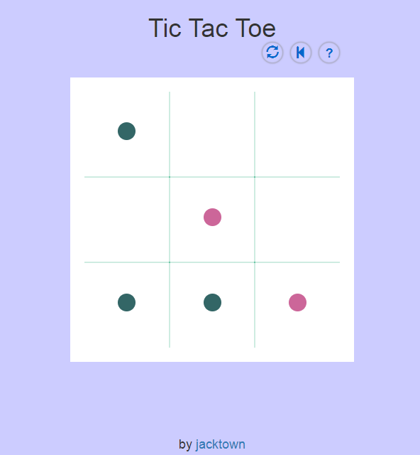

<h2>tic tac toe</h2>

<table>
	<tr>
		<td>github:</td>
		<td><a href="https://github.com/jacktown11/fcc/tree/master/Build_a_Personal_Portfolio_Webpage0">https://github.com/jacktown11/fcc/tree/master/Build_a_Personal_Portfolio_Webpage0</a></td>
	</tr>
	<tr>
		<td>在线演示:</td>
		<td><a href="https://codepen.io/jacktown/pen/eRrYyJ">https://codepen.io/jacktown/pen/eRrYyJ</a></td>
	</tr>
	<tr>
		<td>简要说明:</td>
		<td>
			<p>三子棋人机对战</p>
			<p>项目实现的AI在该棋局中具有足够的棋力，如果玩家足够聪明，能够实现的最好结果的是平局。</p>
			<p>项目实现了选择先后手、选择棋子颜色、悔棋、清空棋盘、查看规则、结果显示等功能。</p>
		</td>
	</tr>
</table>
<div></div>